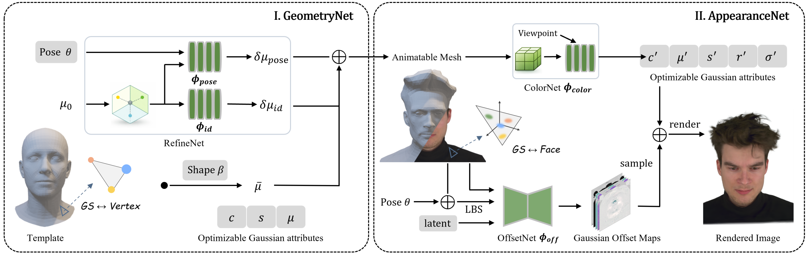

Abstract
Accurate head modeling requires a stable yet expressive geometric representation. Existing Gaussian-based head avatars commonly rely on parametric templates (e.g., FLAME) for Gaussian initialization and deformation, but these templates lack personalized priors and struggle to represent structures such as hair and clothing. To address this issue, we propose MGAvatar, a Gaussian–mesh hybrid representation that jointly models geometry and appearance through two Gaussian–mesh binding modes. Specifically, we introduce vertex-bound Gaussians and constrain their learnable parameters, enabling progressive mesh deformation to represent complex head geometry, while a pose-dependent offset module accounts for non-rigid deformations. Once geometry is stabilized, MGAvatar switches to face-bound Gaussians for appearance modeling. To improve appearance consistency across novel poses and viewpoints, we introduce a view-conditioned neural color field that alleviates artifacts caused by independently optimized Gaussian colors. In addition, we design a Gaussian offset network to predict Gaussian offset maps in the observation space, providing greater flexibility for face-bound Gaussians to capture dynamic facial textures. Extensive experiments on multi-view and monocular videos show that MGAvatar outperforms existing methods in rendering quality, producing high-fidelity head avatars with rich texture details.
Method Overview

We propose an end-to-end framework for high-fidelity head avatar reconstruction with mesh-bound Gaussians. In the geometry stage, FLAME parameters, vertex-bound Gaussians, and a pose-dependent deformation network are jointly optimized to refine identity-specific head geometry. In the appearance stage, face-bound Gaussians and Gaussian attribute offsets model fine-grained appearance, while a grid-based view-conditioned neural field improves color consistency under novel poses and expressions.
Video
Citation
@inproceedings{Shi2026MGAvatarMG, title={MGAvatar: Mesh-Bound Gaussians for Head Avatar Geometry and Appearance Modeling}, author={Lei Shi and Sen Peng and Zhi-Yang Deng and Zhong-Gui Chen and Xiao-Hu Guo and Bao-Rong Yang and Xiao Dong}, year={2026}, url={https://api.semanticscholar.org/CorpusID:291960132}}